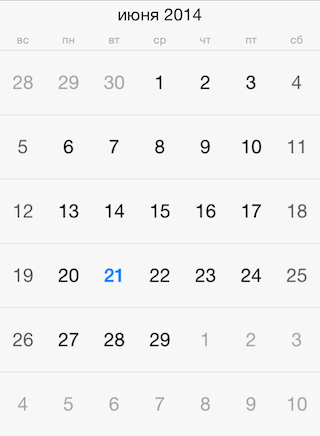

Calendar: Localization

By defualt, TKCalendar uses the current system locale and calendar settings. However, it allows for specifying those settings explicitly, overriding the system settings. This article describes how to do this.
The calendar property of TKCalendar specifies the NSCalendar to be used. You can use this property to change the first day in week to Monday for example:
Objective-C
NSCalendar *calendar = [[NSCalendar alloc] initWithCalendarIdentifier:NSGregorianCalendar];
calendar.firstWeekday = 2;
TKCalendar *calendarView = [[TKCalendar alloc] initWithFrame:self.view.bounds];
calendarView.calendar = calendar;
Swift
let calendar = NSCalendar(calendarIdentifier: NSGregorianCalendar)!
calendar.firstWeekday = 2
let calendarView = TKCalendar(frame: self.view.bounds)
calendarView.calendar = calendar

Or, you can change the calendar with one specific for your users:
Objective-C
calendarView.calendar = [[NSCalendar alloc] initWithCalendarIdentifier:NSChineseCalendar];
Swift
calendarView.calendar = NSCalendar(calendarIdentifier: NSChineseCalendar)
Month names and week day names are provided by the locale property. Use the following code to customize the current locale:
Objective-C
calendarView.locale = [[NSLocale alloc] initWithLocaleIdentifier:@"ru_RU"];
Swift
calendarView.locale = NSLocale(localeIdentifier: "ru_RU")
After modifying the locale you should call the update: method for the presenter:
Objective-C
[calendarView.presenter update:NO];
Swift
calendarView.presenter().update(false)